1004B10 power unit with manual gearbox - r + r
- Path
- Procedures > 10 ENGINE > 1004 ENGINE AND POWER UNIT > 1004B power unit assembly > 1004B10 power unit with manual gearbox - r + r
- Kind
- repair procedure (removal / refitting; the operation number is the code)
- Applies to
- engines: 2.0 JTS, 1.9 JTD 16v, 2.0 JTS, 2.4 JTD 20v; all production periods
- Interactive page
- https://sloeber94.github.io/elrnDB-a156/en/#/3237722
Applies to: engines: 2.0 JTS, 2.0 JTS; all production periods
 Removing
Removing
 Refitting
RefittingPosition the vehicle on the ramp.
DRAIN THE FUEL HIGH-PRESSURE SYSTEM AS DESCRIBED BELOW.
Start up the engine.
Maintain idle for 2 minutes.
Remove the fuel pump relay.
Wait for the engine to stall.
Try to start the engine: if the engine starts within 10 seconds, wait for it to stall, then try to start it again; if the engine does not start within 10 seconds, continue cranking for a further 5 seconds.
Wait until the engine cools down.
Proceed with removal 4450B12 front or rear wheels (two) - r+r .
Proceed with removal 7055B64 Engine compartment DUST shield in front wheel arch (one), left or right - R.R. .
Proceed with removal 7055B54 under-engine guard - r r .
1. Disconnect the lower coolant outlet hose from the radiator and drain the engine coolant.
Reconnect the rapid attachment for the bottom coolant outlet hose from the radiator.
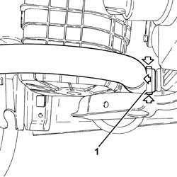
Applies to: engines: 2.0 JTS, 2.0 JTS; all production periods
Proceed with removal 1016A40 ignition coil cover on cylinder head- r+r .
1. Disconnect the rapid attachment for the fuel supply pipe and release it from the attachment on the module inlet manifold.
2. Disconnect the rapid attachment coupling for the fuel vapour recover pipe.
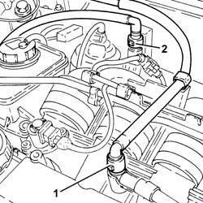
Applies to: engines: 2.0 JTS, 2.0 JTS; all production periods
1. Loosen the band and disconnect the coolant return pipe from the engine coolant reservoir.
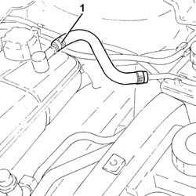
Applies to: engines: 2.0 JTS, 2.0 JTS; all production periods
1. Loosen the band and disconnect the system supply pipe from the water pump rigid inlet pipe.
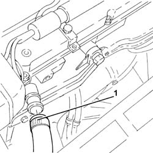
Applies to: engines: 2.0 JTS, 2.0 JTS; all production periods
Proceed with removal 1008C10 power unit upper reaction link r r .
Proceed with removal 5530B10 battery - r+r .
Proceed with removal 5530B52 Battery DRIP TRAY/SUPPORT - R.R. .
1. Disconnect the gear selector/engagement cables.
2. Undo the nuts (2a) and release the bracket (2b) complete with gear selector/engagement cables.
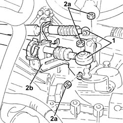
Applies to: engines: 2.0 JTS, 2.0 JTS; all production periods
1. Move the protective cover away.
2. Remove the cap on the bleed valve.
3. Connect the collection system (pipe and reservoir) to the bleed valve on the hydraulic clutch actuator.
4. Lift retaining clip (4a) until the first click is heard and remove pipe (4b) sufficiently to uncover the bleed hole.
Let the hydraulic clutch system drain completely.
Lift up the clip completely and disconnect the pipe from the hydraulic clutch control actuator.
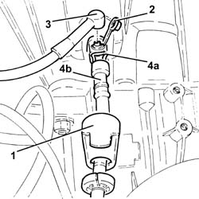
Applies to: engines: 2.0 JTS, 2.0 JTS; all production periods
1. Disconnect the electrical connection from the air flow meter.
 | Name | Connector |
|---|---|---|
1 | Air flow meter |
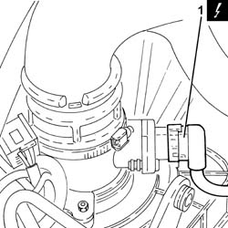
Applies to: engines: 2.0 JTS, 2.0 JTS; all production periods
1. Loosen the band and disconnect the oil vapour recirculation pipe from the cam cover.
2. Loosen the band and disconnect the vacuum pipe from the corrugated sleeve.
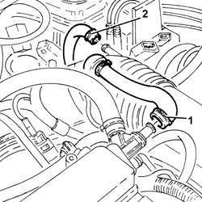
Applies to: engines: 2.0 JTS, 2.0 JTS; all production periods
1. Loosen the bands (1a) and remove the rigid pipe (1b) with corrugated air intake sleeve (1c) from the air filter to the throttle body.
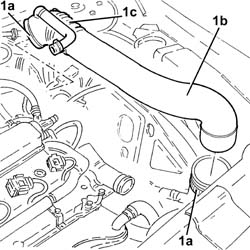
Applies to: engines: 2.0 JTS, 2.0 JTS; all production periods
1. Undo the bolt fixing the air filter cold air intake to the bodyshell.
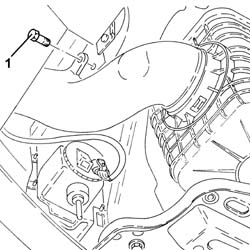
Applies to: engines: 2.0 JTS, 2.0 JTS; all production periods
1. Remove the air filter assembly (1a) together with the cold air intake for the air filter (1b).
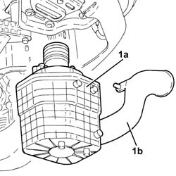
Applies to: engines: 2.0 JTS, 2.0 JTS; all production periods
1. Disconnect the electrical connections (1a) and (1b) for the engine wiring.
| Name | Connector |
|---|---|---|
1a | Front/engine connection |
| Name | Connector |
|---|---|---|
1b | Front/engine connection |
2. Loosen the band and disconnect the vacuum pipe from the modular inlet manifold.
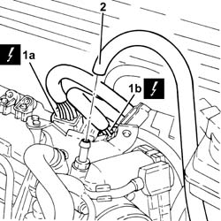
Applies to: engines: 2.0 JTS, 2.0 JTS; all production periods
1. Loosen band and disconnect the upper coolant inlet hose to the radiator, thermostat side.
2. Loosen the band and disconnect the coolant return pipe to the climate control heater, thermostat side.
3. Loosen the band and disconnect the coolant outlet pipe from the climate control heater, water pump rigid inlet pipe side.
4. Loosen the band and disconnect the lower radiator coolant outlet hose from the radiator, water pump rigid inlet pipe end.
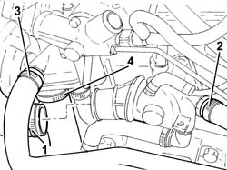
Applies to: engines: 2.0 JTS, 2.0 JTS; all production periods
Drain the power assisted steering reservoir using a suitable syringe.
1. Disconnect the electrical connection from the enablement solenoid of the changeover device actuator.
| Name | Connector |
|---|---|---|
1 | Variable geometry control solenoid |
2. Disconnect the vacuum intake pipe from the air flow switching device actuator and release it from the fastening.
3. Disconnect the linkage for the air flow switching control actuator.
4. Undo the bolts (4a) and remove the air flow switching control actuator (4b).
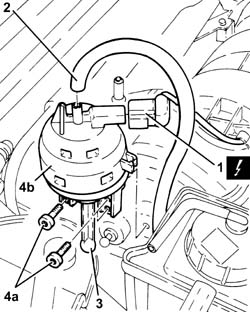
Applies to: engines: 2.0 JTS, 2.0 JTS; all production periods
Release the power steering fluid delivery and return pipes from the connection clip.
1. Undo the bolts (1a) and move the power assisted steering fluid reservoir (1b) aside.
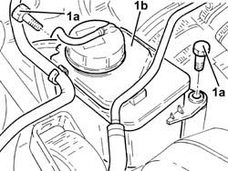
Applies to: engines: 2.0 JTS, 2.0 JTS; all production periods
1. Loosen the band and disconnect the power assisted steering fluid return pipe, reservoir side.
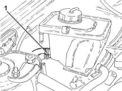
Applies to: engines: 2.0 JTS, 2.0 JTS; all production periods
1. Unscrew the connector and disconnect the delivery pipe from pump to power steering box, pump side.
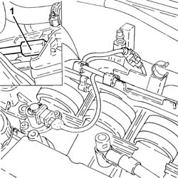
Applies to: engines: 2.0 JTS, 2.0 JTS; all production periods
Proceed with removal 1088E10 radiator cooling fan - r + r .
Drain the air conditioner coolant circuit 5040A10 Air conditioning refrigerant CIRCUIT - Draining and Refilling .
1. Undo the bolt (1a) and disconnect the flange for the inlet/outlet pipes (1b) from the air conditioning compressor.
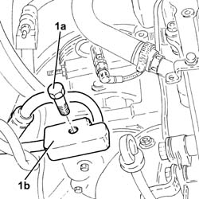
Applies to: engines: 2.0 JTS, 2.0 JTS; all production periods
Proceed with removal 1076B18 rigid section of exhaust pipe between catalytic converter and silencer - r + r .
Disconnect the electrical connections from the starter motor.
| Name | Connector |
|---|---|---|
- | Starter' motor |
1. Disconnect the electrical connection from the reversing switch.
| Name | Connector |
|---|---|---|
1 | Reversing lights switch |
2. Disconnect the battery earth lead from the gearbox.
| Name | Connector |
|---|---|---|
2 | Battery earth |
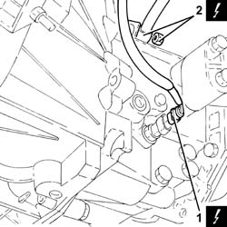
Applies to: engines: 2.0 JTS, 2.0 JTS; all production periods
1. Undo the bolts (1a) and disconnect the flanges for the driveshaft constant velocity joints (1b).
Remove the safety plates.
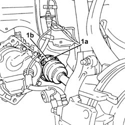
Applies to: engines: 2.0 JTS, 2.0 JTS; all production periods
1. Undo the nut (1a) and disconnect the steering knuckles (1b) from the upper track control arms using the tool (1c).
 | Name | Country |
|---|---|---|
1c | Extractor | 1.821.169.000 |
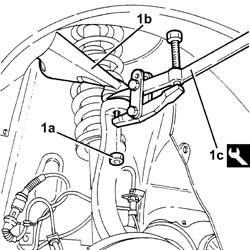
Applies to: engines: 2.0 JTS, 2.0 JTS; all production periods
Release the front brake caliper flexible pipes and the cables for the A.B.S. sensors from the mounting brackets.
Move the left driveshaft as far away as possible from the differential and the right one away from the intermediate driveshaft.
1. Position tools (1a) and (1b), to be used for removing the power unit, on a hydraulic jack.
| Name | Country |
|---|---|---|
1a | Crossmember | 1.820.225.000 |
| Name | Country |
|---|---|---|
1b | Supports | 1.820.623.000 |
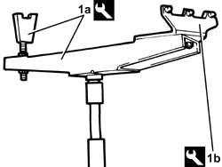
Applies to: engines: 2.0 JTS, 2.0 JTS; all production periods
Position the tool assembled in this way under the power unit and fix it appropriately.
1. Undo the bolt fixing the power unit rigid rear support to the flexible mounting.
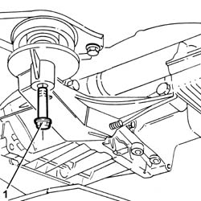
Applies to: engines: 2.0 JTS, 2.0 JTS; all production periods
1. Undo the bolts (1a), (1b) and remove the gearbox side power unit rigid support (1c).
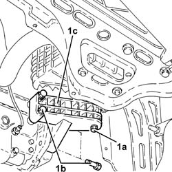
Applies to: engines: 2.0 JTS, 2.0 JTS; all production periods
1. Undo the bolt fixing the timing side rigid support to the flexible mounting.
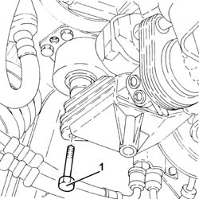
Applies to: engines: 2.0 JTS, 2.0 JTS; all production periods
Move the power unit towards the front of the vehicle and lower it using the hydraulic jack.
Secure and support the power unit using a hydraulic hoist, then release it from the tools used for the removal.
Applies to: engines: 2.0 JTS, 2.0 JTS; all production periods
Refitting
RemovingUsing a hydraulic hoist, position the power unit on a hydraulic jack, complete with tools for refitting.
| Name | Country |
|---|---|---|
- | Crossmember | 1.820.225.000 |
| Name | Country |
|---|---|---|
- | Supports | 1.820.623.000 |
Place the power unit back in the engine compartment using the hydraulic jack.
1. Tighten the bolt ecuring the timing side rigid power unit support to the flexible mounting to the recommended torque.
 | Fastening | Component | Ø | Value (daNm) |
|---|---|---|---|---|
1 | Bolt | ENGINE MOUNT TIMING SIDE | M12 | (Flexible mounting side) 7.9 ÷ 9.7 |
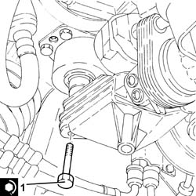
Applies to: engines: 2.0 JTS, 2.0 JTS; all production periods
1. Refit the gearbox side power unit rigid support (1a) in its seating and tighten the bolts (1b) to the specified torque.
| Fastening | Component | Ø | Value (daNm) |
|---|---|---|---|---|
1b | Bolt | POWER UNIT GEAR BOX END RIGID MOUNT | M10 | (Gearbox side) 4.5 ÷ 5.5 |
2. Undo the bolt fixing the gearbox side rigid power unit support to the flexible block to the specified torque.
| Fastening | Component | Ø | Value (daNm) |
|---|---|---|---|---|
2 | - | - | - | - |
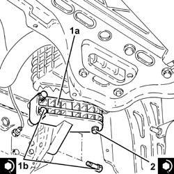
Applies to: engines: 2.0 JTS, 2.0 JTS; all production periods
1. Tighten the bolt fixing the power unit rigid rear support to the flexible mounting.
| Fastening | Component | Ø | Value (daNm) |
|---|---|---|---|---|
1 | - | - | - | - |
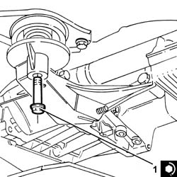
Applies to: engines: 2.0 JTS, 2.0 JTS; all production periods
Remove the tools used for the refitting from the power unit and return them to their place.
Fix the front brake caliper flexible pipes and the A.B.S. sensor cables to the mounting brackets.
1. Connect the steering knuckles to the upper track control arms (1a) and fix them tightening the nut (1b) to the recommended torque.
| Fastening | Component | Ø | Value (daNm) |
|---|---|---|---|---|
1b | Nut | FRONT HUB STEERING KNUCKLE. | M10 | (Upper track control arm side) 4.3 - 4.7 |
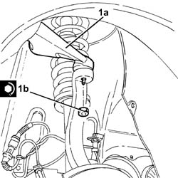
Applies to: engines: 2.0 JTS, 2.0 JTS; all production periods
1. Position the safety plates and tighten the new bolts (1a) for the driveshaft constant velocity joint flanges (1b) to the recommended torque.
| Fastening | Component | Ø | Value (daNm) |
|---|---|---|---|---|
1a | Bolt | FRONT DRIVE SHAFT COMPLETE WITH JOINTS | M8 | (Diff. int./ intermediate. shaft.) driveshaft side 3.6 ÷ 4.4 |
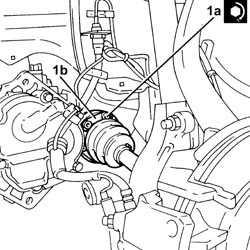
Applies to: engines: 2.0 JTS, 2.0 JTS; all production periods
Connect the electrical connection to the reversing switch.
Connect the battery earth lead to the gearbox.
Connect the electrical connections to the starter motor.
Proceed with refitting 1076B18 rigid section of exhaust pipe between catalytic converter and silencer - r + r .
1. Connect the flange for the inlet/outlet pipes (1a) to the air conditioning compressor and secure it by tightening the bolt (1b) to the recommended torque.
| Fastening | Component | Ø | Value (daNm) |
|---|---|---|---|---|
1b | Bolt | Air conditioning compressor inlet/outlet pipes. | M10 | (Air conditioner compressor side) 3.2 ÷ 3.9 |
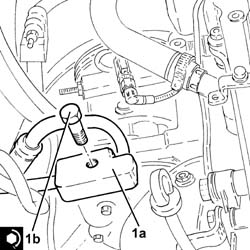
Applies to: engines: 2.0 JTS, 2.0 JTS; all production periods
Proceed with refitting 1088E10 radiator cooling fan - r + r .
1. Connect the supply pipe from the power assisted steering pump to the box, pump side and tighten the connector to the recommended torque.
| Fastening | Component | Ø | Value (daNm) |
|---|---|---|---|---|
1 | Connector | PIPE BTWN PUMP + POWER STEERING BOX | M16 | (Power steering pump side) 3.8 ÷ 4.2 |
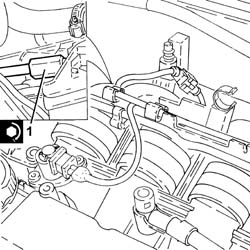
Applies to: engines: 2.0 JTS, 2.0 JTS; all production periods
Connect the return pipe to the power steering fluid reservoir and tighten the band.
Refit in its seating the power steering fluid reservoir and secure it with its bolts.
Secure the delivery and return lines from the power steering reservoir using the connection band.
Fit the air flow switching device actuator in its seating and secure it using the bolts.
Connect the linkage for the air flow switching control actuator.
Connect the air flow switching control actuator vacuum intake pipe and fasten it.
Connect the electrical connection from the enablement solenoid of the changeover device actuator.
Connect the lower radiator coolant outlet hose to the water pump rigid inlet pipe and tighten the band.
Connect the coolant return hose from the climate control heater on the side of the rigid inlet pipe to the water pump and do up the band.
Connect the engine coolant return pipe from the climate control system heater, thermostat side, and tighten the band.
Connect the upper coolant inlet hose to the radiator, thermostat side, and tighten the band.
Connect the vacuum pipe to the modular inlet manifold and tighten the band.
Connect the engine wiring electrical connections.
Place the air filter back assembly in its housing and connect it to the cold air intake for the air filter.
Tighten the bolt securing the cold air intake for air filter to the bodywork.
Place the rigid air supply pipe with corrugated air intake sleeve from the filter to the throttle body back in its housing and secure it using the bands.
Connect the vacuum pipe to the corrugated hose and tighten the band.
Connect the oil vapour recirculation pipe to the tappet cover and secure with a band.
Connect the electrical connection to the air flow meter.
Fit the pipe fully home in its seat on the hydraulic clutch control actuator and secure with the retaining clip.
Place the cap in its housing on the bleed valve.
Place the protective cover back in its housing.
Refit the bracket complete with gear selector/engagement cables and secure it using the nuts.
Connect the gear selector/engagement cables.
Proceed with refitting 5530B52 Battery DRIP TRAY/SUPPORT - R.R. .
Proceed with refitting 5530B10 battery - r+r .
Proceed with refitting 1008C10 power unit upper reaction link r r .
Connect the system supply pipe to the water pump rigid inlet pipe and tighten the band.
Connect the coolant return pipe to the engine coolant reservoir and tighten the band.
Connect the rapid attachment for the fuel vapour recovery pipe.
Connect the rapid attachment connector for the fuel supply pipe and secure it to the fastening on the modular intake manifold.
Proceed with refitting 1016A40 ignition coil cover on cylinder head- r+r .
Proceed with refitting 7055B54 under-engine guard - r r .
Proceed with refitting 7055B64 Engine compartment DUST shield in front wheel arch (one), left or right - R.R. .
Proceed with refitting 4450B12 front or rear wheels (two) - r+r .
Proceed with refitting 0010T20 coolant change .
Proceed with refitting 1820B08 Clutch release HYDRAULIC SYSTEM - Bleeding air and restoring level .
Fill the power steering circuit with the recommended fluid.
 | Type | Component | Name | Qty. |
|---|---|---|---|---|
- | Fluid | HYDRAULIC POWER ASSISTED STEERING SYSTEM | TUTELA GI/A | 1.3 |
Bleed the power steering system as described below
With the front wheels raised off the ground, with the engine switched off turn the steering wheel to full lock, left and right, 4-5 times.
Check and, if necessary, top up the fluid level in the reservoir.
Position the vehicle on the ground and start up the engine.
Carry out 4 - 5 complete steering wheel rotation cycles (right and left).
Top up the fluid level in the reservoir.
Fill the air conditioner coolant circuit 5040A10 Air conditioning refrigerant CIRCUIT - Draining and Refilling .
Applies to: engines: 1.9 JTD 16v; all production periods
Removing
RefittingPosition the vehicle on the ramp.
Proceed with removal 1016A10 sound-proofing cover - r + r .
Drain the air conditioner coolant circuit - 0010T84 coolant for air conditioning system dehydrate and recharge .
Proceed with removal 4450B12 front or rear wheels (two) - r+r .
Proceed with removal 7055B54 under-engine guard - r r .
Proceed with removal 7055A43 central front grille - r r .
Proceed with removal 7055A41 RIGHT FRONT GRILLE - R.R. .
Proceed with removal 7210E10 R.R. FRONT BUMPER .
Proceed with removal 1084C40 Air DUCT for engine oil cooling radiator - R.R . .
1. Undo the bolt (1a) and disconnect the cooling radiator engine oil supply pipe (1b), engine oil filter mounting side.
2. Undo the bolt (2a) and disconnect the cooling radiator engine oil return pipe (2b), engine oil filter mounting side.
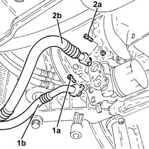
Applies to: engines: 1.9 JTD 16v; all production periods
1. Undo the nuts (1a) and remove the engine oil cooling radiator (1b) complete with pipes (1c).
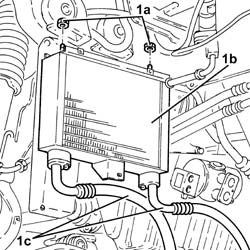
Applies to: engines: 1.9 JTD 16v; all production periods
1. Undo the nut (1a) and move the bracket (1b) complete with power assisted steering system heat exchanger pipe (1c) aside.
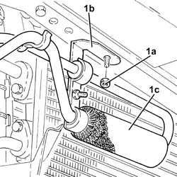
Applies to: engines: 1.9 JTD 16v; all production periods
Proceed with removal 5530B10 battery - r+r .
Proceed with removal 5530B52 Battery DRIP TRAY/SUPPORT - R.R. .
1. Loosen the band and disconnect the lower radiator coolant outlet hose from the radiator, water pump rigid inlet pipe end.
2. Loosen the band and disconnect the system supply pipe from the water pump rigid inlet pipe.
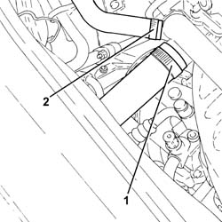
Applies to: engines: 1.9 JTD 16v; all production periods
1. Loosen the band and disconnect the upper coolant inlet hose to the radiator, thermostat side.
2. Loosen the band and disconnect the coolant return pipe to the climate control heater, thermostat side.
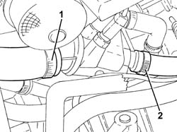
Applies to: engines: 1.9 JTD 16v; all production periods
Proceed with removal 1048A50 air inlet pipe to turbo charger - r + r .
1. Loosen the band and disconnect the coolant outlet pipe from the climate control heater, water pump rigid inlet pipe side.
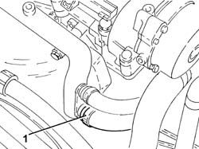
Applies to: engines: 1.9 JTD 16v; all production periods
1. Loosen the band and disconnect the flexible coolant return pipe from the rigid coolant return pipe to the engine coolant reservoir.
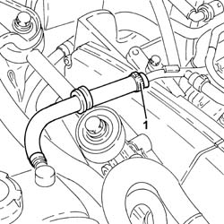
Applies to: engines: 1.9 JTD 16v; all production periods
1. Loosen the band and disconnect the air intake hose from the connector on the throttle casing.
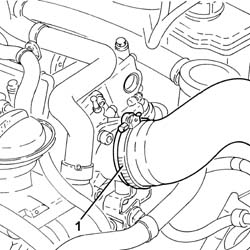
Applies to: engines: 1.9 JTD 16v; all production periods
1. Disconnect the electrical connection from the air flow meter.
| Name | Connector |
|---|---|---|
1 | Air flow meter |
2. Release earth lead (2a) from collar (2b) on the air cleaner.
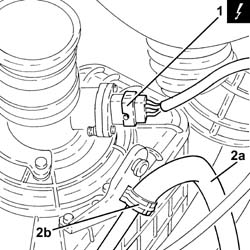
Applies to: engines: 1.9 JTD 16v; all production periods
1. Loosen the bands (1a) and remove the air supply hose between the turbocharger and the heat exchanger (1b).
2. Disconnect the cold air intake from the air filter.
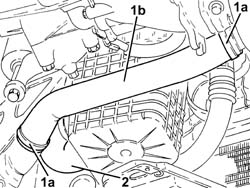
Applies to: engines: 1.9 JTD 16v; all production periods
1. Loosen the band and disconnect the the turbocharger air inlet hose from the rigid pipe, turbocharger side.
2. Loosen the band and disconnect the oil vapour recirculation pipe from the turbocharger air intake hose.
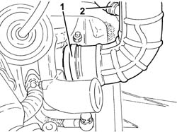
Applies to: engines: 1.9 JTD 16v; all production periods
1. Move the air cleaner assembly aside as far as necessary, then unscrew the lower bolts securing the resonator device to the air cleaner.
2. Working from beneath the car, remove the air filter (2a), complete with air flow meter (2b) and sleeve (2c).
3. Remove lower resonator device (3a) complete with sleeves(3b).
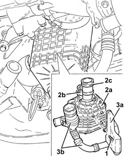
Applies to: engines: 1.9 JTD 16v; all production periods
1. Disconnect the single-acting valve for the vacuum pipe from the brake servo.
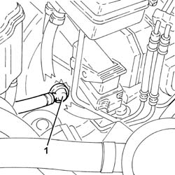
Applies to: engines: 1.9 JTD 16v; all production periods
Remove the protective cap on the master cylinder bleed valve.
Connect the collection system (pipe and reservoir) to the bleed valve on the master cylinder.
Operate the clutch pedal until the brake-clutch fluid reservoir is empty.
1. Undo the connector (1a) and disconnect the pipe from the vibration damper to the operating cylinder (1b), operating cylinder side and release it from the band (1c).
2. Disconnect the electrical connection from the reversing lights switch.
| Name | Connector |
|---|---|---|
2 | Reversing lights switch |
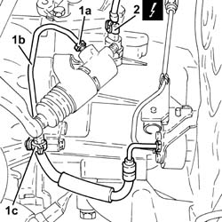
Applies to: engines: 1.9 JTD 16v; all production periods
1. Disconnect the gear selector and engagement cables
2. Undo the nuts (2a) and move the mounting brackets (2b) complete with gear selector and engagement cables aside.
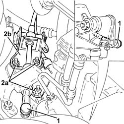
Applies to: engines: 1.9 JTD 16v; all production periods
1. Undo the nut (1a) and lift up the heater plugs control unit (1b) as much as necessary.
2. Disconnect the electrical connection from the pre-heating control unit.
| Name | Connector |
|---|---|---|
2 | Plug preheating control unit |
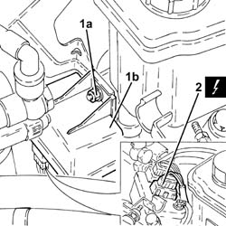
Applies to: engines: 1.9 JTD 16v; all production periods
1. Disconnect the rapid attachment for the fuel return pipe to the tank, fuel return manifold pipe side.
2. Disconnect the rapid attachment for the fuel return pipe from the fuel filter, return manifold pipe side.
3. Disconnect the quick-release connector for the fuel supply pipe to the pressure pump, fuel filter side.
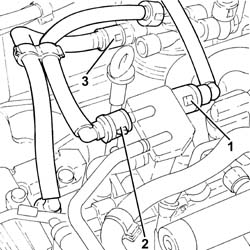
Applies to: engines: 1.9 JTD 16v; all production periods
1. Undo the bolts (1a) and remove the power unit reaction rod (1b).
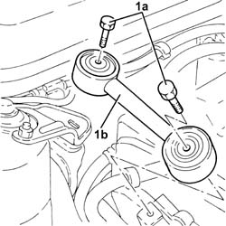
Applies to: engines: 1.9 JTD 16v; all production periods
1. Disconnect the electrical connections (1a) and (1b) from the diesel electronic injection system control unit.
| Name | Connector |
|---|---|---|
1a | Engine management ECU |
| Name | Connector |
|---|---|---|
1b | Engine management ECU |
Applies to: engines: 1.9 JTD 16v; all production periods
1. Undo the nuts (1a) and remove the diesel electronic injection system control unit (1b) complete with slides (1c).
Applies to: engines: 1.9 JTD 16v; all production periods
Remove the power steering fluid reservoir cap and drain the fluid using a suitable syringe.
Refit the brake fluid reservoir cap.
1. Disconnect the rapid connector for the supply pipe from the fluid reservoir to the power assisted steering pump, reservoir side.
Applies to: engines: 1.9 JTD 16v; all production periods
1. Undo the connector (1a) and disconnect the delivery pipe from pump to power steering box (1b), steering box side.
2. Release the supply pipe from the pump to the steering box from the retaining band on the power steering box.
Applies to: engines: 1.9 JTD 16v; all production periods
1. Undo the bolt (1a) and disconnect the flange for the coolant inlet and outlet pipes (1b) from the air conditioner compressor.
2. Undo the nut (2a) and disconnect the intermediate coupling for the pipe from the air conditioning compressor to the evaporator (2b).
Applies to: engines: 1.9 JTD 16v; all production periods
1. Undo the bolts (1a) and disconnect the coolant inlet and outlet pipes (1b) from the air conditioner condenser.
Applies to: engines: 1.9 JTD 16v; all production periods
1. Undo the upper bolt fixing the engine cooling radiator to the upper crossmember.
2. Disconnect the electrical connections from the engine fan motors.
| Name | Connector |
|---|---|---|
2 | Engine fan motor - 1 |
| Name | Connector |
|---|---|---|
2 | Engine fan motor - 2 |
3. Disconnect the electrical connections from the resistors for the engine cooling fans and move the electrical wiring aside.
| Name | Connector |
|---|---|---|
3 | Engine fan adjustment resistor - 1 |
| Name | Connector |
|---|---|---|
3 | Engine fan adjustment resistor - 2 |
4. Disconnect the pipes from the solenoid valve for the turbocharger vanes actuator.
Disconnect the control pipe from turbocharger vane position actuator.
Applies to: engines: 1.9 JTD 16v; all production periods
1. Disconnect the earth lead from the gearbox.
| Name | Connector |
|---|---|---|
1 | Battery earth |
Applies to: engines: 1.9 JTD 16v; all production periods
1. Position a hydraulic jack under the radiator lower crossmember.
2. Undo the bolts securing the radiator bottom crossmember to the bodywork.
3. Lower the hydraulic jack and remove the lower radiator crossmember (3a), the climate control system condenser (3b), the engine cooling radiator (3c) and the fans (3d).
Applies to: engines: 1.9 JTD 16v; all production periods
1. Unscrew the bolts securing the drive shafts to the internal differential/drive shaft.
2. Release the front brake caliper hoses, the electrical wiring for the brake pad sensor and the electrical wiring for the wheel rpm sensors (A.B.S.) from the fastenings.
Applies to: engines: 1.9 JTD 16v; all production periods
1. Undo the nuts (1a) and disconnect the front wishbones (1b) from the vertical links with the tool (1c).
| Name | Country |
|---|---|---|
1c | Extractor | 1.821.169.000 |
Move the drive shafts away from the differential internal drive shaft/intermediate drive shaft.
Applies to: engines: 1.9 JTD 16v; all production periods
Proceed with removal 1076B70 exhaust pipe between pre-catalytic converter and catalytic converter - r r .
Proceed with removal 1008A44 rear rigid mount - r r .
Position a suitable support under the power unit.
1. Fit the bracket (1a) and fasten it using the bolt (1b) as indicated in the diagram to the bracket on the engine for the reaction rod.
2. Fit the bracket (2a) and fasten to the gearbox it using the bolt (2b) as illustrated in the diagram.
3. Support the power unit using a hydraulic hoist (3a), fitted with suitable chains (3b) connected to the brackets fitted previously and to the bracket (3c) already on the gearbox.
Applies to: engines: 1.9 JTD 16v; all production periods
1. Undo the bolt securing timing side rigid engine support to the flexible mounting.
Applies to: engines: 1.9 JTD 16v; all production periods
1. Undo the bolt fixing the power unit gearbox side rigid support to the flexible mounting.
Applies to: engines: 1.9 JTD 16v; all production periods
Slowly lower the power unit with the hydraulic hoist until it is resting on the support positioned previously.
Applies to: engines: 1.9 JTD 16v; all production periods
Refitting
RemovingPlace the power unit back in the engine compartment using the hydraulic hoist.
1. Tighten the bolt fixing the power unit gearbox side rigid support to the flexible mounting.
| Fastening | Component | Ø | Value (daNm) |
|---|---|---|---|---|
1 | - | - | - | - |
Applies to: engines: 1.9 JTD 16v; all production periods
1. Tighten the bolt securing timing side rigid engine support to the flexible mounting to the recommended torque.
| Fastening | Component | Ø | Value (daNm) |
|---|---|---|---|---|
1 | Bolt | ENGINE MOUNT TIMING SIDE | M12 | (Flexible mounting side) 7.9 ÷ 9.7 |
Applies to: engines: 1.9 JTD 16v; all production periods
Remove the hydraulic hoist fitted with suitable chains for supporting the power unit.
Remove the brackets fitted for supporting the power unit.
Remove the support positioned previously under the power unit.
Proceed with refitting 1008A44 rear rigid mount - r r .
Proceed with refitting 1076B70 exhaust pipe between pre-catalytic converter and catalytic converter - r r .
Refit the drive shafts in their seating in contact with the internal differential drive shaft/intermediate drive shaft.
1. Connect the front upper track control arms (1a) to the steering knuckles and tighten the nuts (1b) to the specified torque.
| Fastening | Component | Ø | Value (daNm) |
|---|---|---|---|---|
1b | Nut | FRONT SUSPENSION TOP LEVER | M10 | (Steering knuckle side) 4.3 ÷ 4.7 |
Applies to: engines: 1.9 JTD 16v; all production periods
1. Tighten the bolts securing the drive shafts to the differential internal drive shaft/intermediate drive shaft to the specified torque.
| Fastening | Component | Ø | Value (daNm) |
|---|---|---|---|---|
1 | Bolt | DRIVESHAFT | M8 | (Differential internal driveshaft side) 3.6 ÷ 4.4 |
| Fastening | Component | Ø | Value (daNm) |
|---|---|---|---|---|
1 | Bolt | DRIVESHAFT | M10 | (Intermediate driveshaft side) 5.8 ÷ 7.0 |
2. Secure the front brake hoses, brake pad wear wiring and ABS inductive sensor wiring.
Applies to: engines: 1.9 JTD 16v; all production periods
Place the lower radiator crossmember, complete with climate control system condenser, engine cooling radiator and fans, back in its housing using the hydraulic jack.
Tighten the bolts securing the radiator bottom crossmember to the bodywork.
Remove the hydraulic jack from underneath the lower radiator crossmember.
Connect the earth lead to the gearbox.
Connect the control pipe to the turbocharger vane position actuator.
Connect the pipes to the solenoid valve for the turbocharger vanes actuator.
Connect the electrical connections to the engine cooling fan resistors and move the electrical wiring aside.
Connect the electrical connections to the engine fan motors.
Tighten the upper bolt fastening the engine cooling radiator to the upper crossmember.
1. Connect the coolant inlet and outlet pipes (1a) from the air conditioning condenser and tighten the bolts (1b) to the recommended torque.
| Fastening | Component | Ø | Value (daNm) |
|---|---|---|---|---|
1b | Bolt | COOLANT SYSTEM FITTINGS | M6 | 0.7 ÷ 1.1 |
Applies to: engines: 1.9 JTD 16v; all production periods
1. Connect the intermediate coupling for the pipe from the air conditioning compressor to the evaporator (1a) and tighten the nut (1b) to the recommended torque.
| Fastening | Component | Ø | Value (daNm) |
|---|---|---|---|---|
1b | Nut | COOLANT SYSTEM FITTINGS | M6 | 0.7 ÷ 1.1 |
2. Connect the flange for the coolant inlet and outlet pipes (2a) to the air conditioning compressor and tighten the bolt (2b) to the recommended torque.
| Fastening | Component | Ø | Value (daNm) |
|---|---|---|---|---|
2b | Bolt | COOLANT SYSTEM FITTINGS | M10 | (Compressor side) 3.2 ÷ 3.9 |
Applies to: engines: 1.9 JTD 16v; all production periods
1. Secure the supply pipe from the pump to the steering box to the retaining band on the power steering box.
2. Connect the supply pipe from the pump to the power assisted steering box (2a), power assisted steering box side, and tighten the connector (2b) to the recommended torque.
| Fastening | Component | Ø | Value (daNm) |
|---|---|---|---|---|
2b | Connector | PIPE BTWN PUMP + POWER STEERING BOX | M14 | (Power assisted steering box side) 3.6 ÷ 4.4 |
Applies to: engines: 1.9 JTD 16v; all production periods
Connect the rapid connector for the supply pipe from the power steering fluid reservoir to the pump, reservoir side.
Place the diesel electronic injection control unit complete with slides back in its housing with its bracket and secure it using the nuts.
Connect the electrical connections to the diesel electronic injection control unit.
1. Place the power unit reaction rod (1a) back in its housing and fix it tightening the bolts (1b) to the recommended torque.
| Fastening | Component | Ø | Value (daNm) |
|---|---|---|---|---|
1b | Bolt | REACTION ROD | M10 | 4.5 ÷ 5.5 |
Applies to: engines: 1.9 JTD 16v; all production periods
Connect the quick-release connector for the fuel supply pipe to the pressure pump, fuel filter side.
Connect the rapid attachment for the fuel return pipe from the fuel filter, return manifold pipe side.
Connect the rapid attachment for the fuel return pipe to the tank, fuel return manifold pipe side.
Connect the electrical connection to the pre-heating control unit.
Place the plug preheating control unit back in its housing and secure with the relevant nut.
Place the gear selector and engagement cables mounting bracket back in its housing and secure it.
Connect the gear selector and engagement cables.
Connect the electrical connection to the reversing lights switch.
Connect the pipe from the vibration damper to the operating cylinder, operating cylinder side and tighten the connector to the recommended torque.
| Fastening | Component | Ø | Value (daNm) |
|---|---|---|---|---|
- | Connector | HOSE FROM VIBRATION DAMPER | M12 | (Operating cylinder side) 1.4 ÷ 2.2 |
Fasten the pipe from the vibration damper to the operating cylinder using the band.
Connect the vacuum pipe single-acting valve to the brake servo.
Refit the lower resonator with sleeves.
Replace the air filter, complete with air flow meter and sleeve, in its housing.
Tighten the lower bolts securing the resonator to the air cleaner.
Connect the oil vapour recirculation pipe, air inlet hose side, to the turbocharger and tighten the band.
Connect the air intake sleeve to the rigid sleeve, turbocharger side, and tighten the band.
Connect the cold air intake to the air filter.
Refit in its seating the air supply duct between turbocharger and heat exchanger and tighten the bands.
Secure the earth lead to the collar on the air cleaner.
Connect the electrical connection to the air flow meter.
Connect the air inlet hose to the connector on the throttle casing and tighten the band.
Connect the flexible pipe to the coolant return pipe to the engine coolant reservoir and tighten the band.
Connect the coolant outlet hose from the climate control system heater on the side of the rigid inlet pipe to the water pump.
Proceed with refitting 1048A50 air inlet pipe to turbo charger - r + r .
Connect the engine coolant return pipe from the climate control system heater, thermostat side, and tighten the band.
Connect the upper coolant inlet hose to the radiator, thermostat side, and tighten the band.
Connect the system supply pipe to the water pump rigid inlet pipe and tighten the band.
Connect the lower radiator coolant outlet hose to the water pump rigid inlet pipe and tighten the band.
Proceed with refitting 5530B52 Battery DRIP TRAY/SUPPORT - R.R. .
Proceed with refitting 5530B10 battery - r+r .
Place the bracket complete with power assisted steering system heat exchanger pipe back in its housing and fasten it using the nut.
Place the engine oil cooling radiator complete with pipes back in its housing and fix it using the nuts.
Connect the engine oil return pipe from the cooling radiator, engine oil filter mounting side, and tighten the bolt.
Connect the engine oil supply pipe to the cooling radiator, engine oil filter mounting side, and tighten the bolt.
Proceed with refitting 1084C40 Air DUCT for engine oil cooling radiator - R.R . .
Proceed with refitting 7210E10 R.R. FRONT BUMPER .
Proceed with refitting 7055A41 RIGHT FRONT GRILLE - R.R. .
Proceed with refitting 7055A43 central front grille - r r .
Proceed with refitting 7055B54 under-engine guard - r r .
Proceed with refitting 4450B12 front or rear wheels (two) - r+r .
Refill the engine oil lubrication system - 0010T11 engine oil check level and top up .
Refill the engine cooling system with coolant 0010T20 coolant change .
Proceed with refitting 0010T67 hydraulic clutch system bleed air .
Fill the air conditioner coolant circuit - 0010T84 coolant for air conditioning system dehydrate and recharge .
Refill the power assisted steering circuit using the recommended fluid.
| Type | Component | Name | Qty. |
|---|---|---|---|---|
- | Oli [l] | POWER ASSISTED STEERING CIRCUIT | TUTELA GI/A | 1.3 |
Bleed the power steering system as described below
With the front wheels raised off the ground, with the engine switched off turn the steering wheel to full lock, left and right, 4-5 times.
Check and, if necessary, top up the fluid level in the reservoir.
Remove the car from the ramps.
Start the engine and turn the steering wheel to full lock, left and right, 4 - 5 times.
Top up the fluid level in the reservoir.
Proceed with refitting 1016A10 sound-proofing cover - r + r .
Applies to: engines: 2.4 JTD 20v; all production periods
Removing
RefittingPosition the vehicle on the ramp.
Drain the air conditioner coolant circuit - 0010T84 coolant for air conditioning system dehydrate and recharge .
Proceed with removal 1016A10 sound-proofing cover - r + r .
Proceed with removal 5530B10 battery - r+r .
Proceed with removal 5530B52 Battery DRIP TRAY/SUPPORT - R.R. .
Proceed with removal 4450B12 front or rear wheels (two) - r+r .
Proceed with removal 7055B54 under-engine guard - r r .
Proceed with removal - 7055B66 Engine compartment DUST SHIELD protection in right front wheel arch - R.R. .
Proceed with removal - 7055B91 Right front WHEEL ARCH LINER - R.R. .
Proceed with removal - 7055B90 Left front WHEEL ARCH LINER - R.R. .
Proceed with removal 1048A50 air inlet pipe to turbo charger - r + r .
1. Undo the fixing bolt (1a) and disconnect the lower steering control shaft (1b) from the power steering box.
Applies to: engines: 2.4 JTD 20v; all production periods
1. Disconnect the rapid connector and disconnect the lower radiator coolant outlet hose from the radiator, radiator side.
Applies to: engines: 2.4 JTD 20v; all production periods
1. Disconnect the rapid connectors on the power steering fluid inlet and outlet pipes, heat exchanger pipe side.
2. Loosen the band and disconnect the air supply hose between the turbocharger and the heat exchanger, heat exchanger side.
Applies to: engines: 2.4 JTD 20v; all production periods
1. Loosen the band, disconnect the air supply hose between turbocharger and heat exchanger, turbocharger side, and remove it.
2. Disconnect the vacuum pipe from the turbocharger variable geometry control actuator.
Applies to: engines: 2.4 JTD 20v; all production periods
1. Disconnect the electrical connection from the air flow meter.
| Name | Connector |
|---|---|---|
1 | Air flow meter |
2. Remove the air filter (2a) complete with air flow meter (2b) after releasing it from the cold air intake.
Applies to: engines: 2.4 JTD 20v; all production periods
1. Undo the bolt (1a) and disconnect the pipe from the intermediate connector to the air conditioning compressor (1b), air conditioning compressor side.
2. Undo the bolt (2a) and disconnect the pipe from the air conditioning compressor to the intermediate connector (2b), compressor side.
Applies to: engines: 2.4 JTD 20v; all production periods
1. Undo the nut (1a) and disconnect the pipe from the intermediate connector to the air conditioner compressor (1b), intermediate connector side and move it aside.
2. Undo the nut (2a) and disconnect the pipe from the air conditioning compressor to the intermediate connector (2b), intermediate connector side.
3. Remove the pipe from the air conditioning compressor to the intermediate connector, after releasing it from the fastening bands.
Applies to: engines: 2.4 JTD 20v; all production periods
1. Loosen the band and disconnect the air supply hose from the heat exchanger to the inlet manifold, inlet manifold side.
2. Connect the electrical connections to the diesel electronic injection control unit.
| Name | Connector |
|---|---|---|
2 | Engine management ECU |
Applies to: engines: 2.4 JTD 20v; all production periods
1. Disconnect the electrical connection from the reversing lights switch.
| Name | Connector |
|---|---|---|
1 | Reversing lights switch |
2. Disconnect the gear selector and engagement cables.
3. Remove the cap on the bleed valve.
4. Connect the collection system (pipe and reservoir) to the bleed valve on the hydraulic clutch actuator.
5. Lift the retaining clip (5a) and extract the bleed device as much as necessary (5b).
Let the hydraulic clutch system drain completely.
6. Lift the retaining clip (6a) and disconnect the pipe (6b) from the clutch hydraulic control actuator and move it aside after releasing it from the bands (6c).
Applies to: engines: 2.4 JTD 20v; all production periods
1. Undo the bolts securing the power steering fluid reservoir.
2. Lift the power steering fluid reservoir as much as necessary and disconnect the rapid connectors on the power steering fluid supply and return pipes.
3. Remove the power steering fluid reservoir.
Applies to: engines: 2.4 JTD 20v; all production periods
1. Undo the nut (1a), move the plug preheating control unit (1b) as much as necessary to disconnect the electrical connections (1c), then remove it.
| Name | Connector |
|---|---|---|
1c | Plug preheating control unit |
Applies to: engines: 2.4 JTD 20v; all production periods
1. Disconnect the quick-release connector for the front fuel supply pipe, fuel filter side.
2. Disconnect the rapid attachment on the fuel return pipe to the fuel return manifold pipe, fuel filter side.
3. Disconnect the quick-release connector for the fuel supply pipe to the pressure pump, fuel filter side.
4. Disconnect the electrical connection from the fuel temperature sensor.
| Name | Connector |
|---|---|---|
4 | Fuel temperature sensor |
5. Disconnect the electrical connection from the fuel pre-heating device.
| Name | Connector |
|---|---|---|
5 | Fuel temperature sensor |
Applies to: engines: 2.4 JTD 20v; all production periods
1. Undo the nuts (1a), raise the fuel filter sufficiently to disconnect the electrical connection from the water presence sensor in the fuel filter (1b).
| Name | Connector |
|---|---|---|
1b | Water in diesel filter sensor |
2. Remove the complete fuel filter.
Applies to: engines: 2.4 JTD 20v; all production periods
1. Disconnect the single-acting valve from the brake servo.
Applies to: engines: 2.4 JTD 20v; all production periods
1. Disconnect the front engine coupling.
| Name | Connector |
|---|---|---|
1 | Front/engine connection |
2. Loosen the band and disconnect the flexible coolant return pipe from the rigid coolant return pipe to the engine coolant reservoir.
3. Disconnect the rapid attachment for the fuel return pipe to the tank, fuel return manifold pipe side.
Applies to: engines: 2.4 JTD 20v; all production periods
1. Loosen the band and disconnect the system supply pipe from the water pump rigid inlet pipe.
Applies to: engines: 2.4 JTD 20v; all production periods
1. Disconnect the vacuum pipe from the solenoid valve for the turbocharger vanes actuator.
Applies to: engines: 2.4 JTD 20v; all production periods
1. Remove the stops (1a) and release the front brake caliper hoses (1b) from the mounting brackets.
2. Remove the clips fixing the brake calipers to the brackets.
3. Remove the protective plugs (3a), undo the bolts (3b) and move aside the front brake calipers (3c) complete with pads and secure them as appropriate.
Applies to: engines: 2.4 JTD 20v; all production periods
1. Undo nuts (1a) and disconnect upper track control arms (1b) from the steering knuckles using tool (1c).
| Name | Country |
|---|---|---|
1c | Extractor | 1.821.169.000 |
Applies to: engines: 2.4 JTD 20v; all production periods
1. Undo the bolts securing the lower forks to the lower track control arms.
Applies to: engines: 2.4 JTD 20v; all production periods
1. Undo the nuts (1a) and disconnect the front anti-roll bar joints (1b), lower forks side.
2. Loosen the bands securing the gaiters and disconnect the front driveshafts.
Applies to: engines: 2.4 JTD 20v; all production periods
1. Loosen the bands and disconnect the coolant supply and return pipes to the climate control system heater.
2. Disconnect the electrical connection from the temperature sensor for additional heater.
| Name | Connector |
|---|---|---|
2 | Additional heater temperature sensor |
Applies to: engines: 2.4 JTD 20v; all production periods
1. Undo the bolts (1a) and disconnect the oil supply and return pipes (1b), engine oil heat exchanger side.
Applies to: engines: 2.4 JTD 20v; all production periods
1. Undo bolt (1a) and disconnect battery earth lead (1b) from the power unit gearbox end rigid mount.
| Name | Connector |
|---|---|---|
1b | Battery earth |
Applies to: engines: 2.4 JTD 20v; all production periods
Proceed with removal 1076B70 exhaust pipe between pre-catalytic converter and catalytic converter - r r .
Proceed with removal 1080B62 catalytic converter - r + r .
Proceed with removal 1008A44 rear rigid mount - r r .
Proceed with removal 2125C70 gearbox/brake lever mount - r r .
1. Undo the bolts (1a) and remove the flexible mounting for the power unit rigid rear support (1b).
Applies to: engines: 2.4 JTD 20v; all production periods
1. Undo the connector and disconnect the delivery pipe from pump to power steering box, steering box side.
Release the supply pipe from the pump to the power steering box from the retaining bands on the power steering box.
Applies to: engines: 2.4 JTD 20v; all production periods
1. Support the front suspension crossmember using a hydraulic jack (1a) and the tool (1b).
| Name | Country |
|---|---|---|
1b | Flange | 1.860.978.000 |
2. Undo the bolts fixing the front suspension crossmember to the bodyshell.
Applies to: engines: 2.4 JTD 20v; all production periods
1. Lower the hydraulic jack and remove the front suspension crossmember complete with accessories.
Applies to: engines: 2.4 JTD 20v; all production periods
Proceed with removal 1008C10 power unit upper reaction link r r .
Position a suitable support under the power unit.
1. Fit a suitable bracket (1a) on the bracket on the engine for the reaction rod and secure it with the bolt (1b).
2. Support the power unit using a hydraulic crane fitted with suitable chains connected to the bracket mounted previously and to the rod of the power unit support, gearbox side.
Applies to: engines: 2.4 JTD 20v; all production periods
1. Undo the bolt securing the timing side power unit rigid support to the flexible mounting.
Applies to: engines: 2.4 JTD 20v; all production periods
1. Undo the bolt fixing the gearbox side power unit rigid support to the flexible mounting.
Applies to: engines: 2.4 JTD 20v; all production periods
Slowly lift the car on the ramp, then place the power unit on the platform using the hydraulic crane.
Applies to: engines: 2.4 JTD 20v; all production periods
Refitting
RemovingRefit the power unit in its seating, slowly lowering the car on the eramp and manoeuvring the hydraulic crane as appropriate.
1. Tighten the bolt securing the gearbox side rigid power unit support to the flexible mounting to the recommended torque.
| Fastening | Component | Ø | Value (daNm) |
|---|---|---|---|---|
1 | - | - | - | - |
Applies to: engines: 2.4 JTD 20v; all production periods
1. Tighten the bolt fixing the timing side rigid power unit support to the flexible mounting to the recommended torque.
| Fastening | Component | Ø | Value (daNm) |
|---|---|---|---|---|
1 | Bolt | ENGINE MOUNT TIMING SIDE | M12 | (Flexible mounting side) 7.9 ÷ 9.7 |
Applies to: engines: 2.4 JTD 20v; all production periods
Remove the hydraulic hoist fitted with suitable chains used for safely supporting the power unit.
Undo the bolt and remove the bracket from the bracket on the engine for the reaction rod.
Remove the platform from under the power unit.
Proceed with refitting 1008C10 power unit upper reaction link r r .
Using the hydraulic jack, refit the front suspension crossmember complete with accessories in its seating.
1. Tighten the bolts securing the front suspension crossmember to the bodyshell to the specified torque.
| Fastening | Component | Ø | Value (daNm) |
|---|---|---|---|---|
1 | Side bolt | ENGINE OR ROD ANCHORAGE BEAM | M12 | (Bodyshell side) 10.8 ÷ 13.2 |
| Fastening | Component | Ø | Value (daNm) |
|---|---|---|---|---|
1 | Rear bolts | ENGINE OR ROD ANCHORAGE BEAM | M12 | (Bodyshell side) 10.8 ÷ 13.2 |
| Fastening | Component | Ø | Value (daNm) |
|---|---|---|---|---|
1 | Rear bolt | ENGINE OR ROD ANCHORAGE BEAM | M10 | (Bodyshell side) 8.1 ÷ 9.9 |
2. Remove the hydraulic jack (2a) and tool (2b) used for supporting the front suspension crossmember.
| Name | Country |
|---|---|---|
2b | Flange | 1.860.978.000 |
Applies to: engines: 2.4 JTD 20v; all production periods
1. Refit the flexible mounting for the power unit rear rigid support (1a) in its seating and tighten the bolts (1b) to the specified torque.
| Fastening | Component | Ø | Value (daNm) |
|---|---|---|---|---|
1b | Bolt | INTERM RUBBER MOUNT | M8 | (Front suspension crossmember side) 3.3 ÷ 3.9 |
Applies to: engines: 2.4 JTD 20v; all production periods
Proceed with refitting 2125C70 gearbox/brake lever mount - r r .
Proceed with refitting 1008A44 rear rigid mount - r r .
Proceed with refitting 1080B62 catalytic converter - r + r .
Proceed with refitting 1076B70 exhaust pipe between pre-catalytic converter and catalytic converter - r r .
Connect the battery earth lead to the gearbox side rigid power unit support and fix it using the bolt.
Connect the oil supply and return pipes, engine oil heat exchanger side, and secure it with the bolts.
Secure the supply pipe from the pump to the power steering box to the retaining bands on the power steering box.
1. Connect the supply pipe from pump to the power steering pump, power steering box side and tighten the connector to the recommended torque.
| Fastening | Component | Ø | Value (daNm) |
|---|---|---|---|---|
1 | Connector | PIPE BTWN PUMP + POWER STEERING BOX | M14 | (Power assisted steering box side) 3.6 ÷ 4.4 |
Applies to: engines: 2.4 JTD 20v; all production periods
Connect the electrical connection to the temperature sensor for the additional heater.
Connect the coolant supply and return pipes to the climate control heater and tighten the bands.
1. Connect the front drive shafts and tighten the gaiter bands.
2. Connect the front suspension anti-roll bar joints, lower forks side, and tighten the nuts to the specified torque.
| Fastening | Component | Ø | Value (daNm) |
|---|---|---|---|---|
2 | Nut | FRONT ANTI-ROLL BAR JOINTS | M10 | 4.5 ÷ 5.5 |
Applies to: engines: 2.4 JTD 20v; all production periods
1. Tighten the bolts securing the lower forks to the lower track control arms to the specified torque.
| Fastening | Component | Ø | Value (daNm) |
|---|---|---|---|---|
1 | Bolt | FRONT DAMPER FORK ON WISHBONE | M12 | (Lower track control arm side) 10.8 ÷ 13.2 |
Applies to: engines: 2.4 JTD 20v; all production periods
1. Connect the upper track control arms (1a) to the steering knuckles and tighten the nuts (1b) to the specified torque.
| Fastening | Component | Ø | Value (daNm) |
|---|---|---|---|---|
1b | Nut | FRONT SUSPENSION TOP LEVER | M10 | (Wheel damper side) 4.3 - 4.7 |
Applies to: engines: 2.4 JTD 20v; all production periods
1. Refit the front brake calipers (1a) in their seats complete with pads and tighten the bolts (1b) to the specified torque.
| Fastening | Component | Ø | Value (daNm) |
|---|---|---|---|---|
1b | Bolt | FRONT BRAKE CALIPER ASSEMBLY | M10 | (Bracket side) 4.8 - 5.2 |
2. Refit the plugs in their housings.
3. Refit in their seats the clips securing the brake calipers to their mounting brackets.
4. Secure the front brake caliper hoses (4a) to their mounting brackets and lock them with their stops (4b).
Applies to: engines: 2.4 JTD 20v; all production periods
Connect the vacuum pipe to the solenoid valve for the turbocharger vanes actuator.
Connect the system supply pipe to the water pump rigid inlet pipe and tighten the band.
Connect the rapid attachment for the fuel return pipe to the tank, fuel return manifold pipe side.
Connect the flexible pipe to the coolant return pipe to the engine coolant reservoir and tighten the band.
Connect the front engine coupling.
Connect the electrical connection to the water-in-fuel filter sensor, then refit it in its seating and secure it with the nuts.
Connect the electrical connection to the fuel pre-heating device.
Connect the electrical connection to the fuel temperature sensor.
Connect the quick-release connector for the fuel supply pipe to the pressure pump, fuel filter side.
Connect the rapid attachment of the front fuel return pipe to the fuel return manifold pipe, fuel filter side.
Connect the quick-release connector for the front fuel supply pipe, fuel filter side.
Connect the electrical connections to the plug preheating control unit, then refit it in its seating and secure it with the nut.
Connect the one-way valve to the brake servo.
Connect the rapid connectors for the power steering fluid supply and return pipes to the power steering fluid reservoir, then place it in its seating and secure it with the bolts.
Connect the clutch hydraulic actuator pipe and secure it with its clip.
Connect the gear selector and engagement cables.
Connect the electrical connection to the reversing lights switch.
Connect the electrical connection to the diesel electronic injection control unit.
Connect the air supply hose from the heat exchanger to the inlet manifold, inlet manifold side, and tighten the band.
Replace the pipe from the air conditioning compressor to the intermediate connector in its seating and secure it with its attachments.
Connect the pipe from the air conditioning compressor to the intermediate connector, intermediate connector side, and tighten the nut to the specified torque.
| Fastening | Component | Ø | Value (daNm) |
|---|---|---|---|---|
- | Nut | COOLANT SYSTEM FITTINGS | M6 | 0.7 ÷ 1.1 |
Connect the pipe from the intermediate connector to the air conditioning comrpessor, intermediate connector side, and tighten the nut to the specified torque.
| Fastening | Component | Ø | Value (daNm) |
|---|---|---|---|---|
- | Nut | COOLANT SYSTEM FITTINGS | M6 | 0.7 ÷ 1.1 |
Connect the pipe from air conditioning compressor to the intermediate connector, compressor side, and tighten the bolt to the specified torque.
| Fastening | Component | Ø | Value (daNm) |
|---|---|---|---|---|
- | Bolt | COOLANT SYSTEM FITTINGS | M6 | 0.7 ÷ 1.1 |
Connect the pipe from the intermediate connector to the air conditioning compressor, air conditioning side, and tighten the bolt to the specified torque.
| Fastening | Component | Ø | Value (daNm) |
|---|---|---|---|---|
- | Bolt | COOLANT SYSTEM FITTINGS | M6 | 0.7 ÷ 1.1 |
Place the air filter, complete with air flow meter, back in its housing and connect it to the cold air intake.
Connect the electrical connection to the air flow meter.
Connect the vacuum pipe from the turbocharger variable geometry control actuator.
Refit in its seating the air supply duct between turbocharger and heat exchanger and tighten the bands.
Connect the rapid connectors of the power steering fluid inlet and outlet pipes, heat exchanger pipe side.
Connect the rapid attachment for the lower coolant outlet hose from the radiator, radiator side.
1. Connect the lower steering control shaft (1a) to the power steering box and tighten a new one (1b) to the specified torque.
| Fastening | Component | Ø | Value (daNm) |
|---|---|---|---|---|
1b | - | - | - | - |
Applies to: engines: 2.4 JTD 20v; all production periods
Proceed with refitting 1048A50 air inlet pipe to turbo charger - r + r .
Proceed with refitting - 7055B90 Left front WHEEL ARCH LINER - R.R. .
Proceed with refitting - 7055B91 Right front WHEEL ARCH LINER - R.R. .
Proceed with refitting - 7055B66 Engine compartment DUST SHIELD protection in right front wheel arch - R.R. .
Proceed with refitting 4450B12 front or rear wheels (two) - r+r .
Refill the engine oil lubrication system - 0010T11 engine oil check level and top up .
Refill the manual gearbox and differential - 0010T41 MANUAL GEARBOX OIL - Check level and top up, if necessary .
Proceed with refitting - 0010T64 brake and or clutch fluid check level and top up as necessary .
Proceed with refitting 0010T67 hydraulic clutch system bleed air .
Proceed with refitting 0010T71 power steering fluid check level and top up if necessary .
Refill the engine cooling system with coolant 0010T20 coolant change .
Fill the air conditioner coolant circuit - 0010T84 coolant for air conditioning system dehydrate and recharge .
Proceed with refitting 7055B54 under-engine guard - r r .
Proceed with refitting 5530B52 Battery DRIP TRAY/SUPPORT - R.R. .
Proceed with refitting 5530B10 battery - r+r .
Proceed with refitting 1016A10 sound-proofing cover - r + r .
Remove the car from the ramps.
Topics linked from this page (43)
- 0010T20 coolant change
- 0010T67 hydraulic clutch system bleed air
- 0010T71 power steering fluid check level and top up if necessary
- 1008A44 rear rigid mount - r r
- 1008C10 power unit upper reaction link r r
- 1016A10 sound-proofing cover - r + r
- 1016A40 ignition coil cover on cylinder head- r+r
- 1048A50 air inlet pipe to turbo charger - r + r
- 1076B18 rigid section of exhaust pipe between catalytic converter and silencer - r + r
- 1076B70 exhaust pipe between pre-catalytic converter and catalytic converter - r r
- 1080B62 catalytic converter - r + r
- 1084C40 Air DUCT for engine oil cooling radiator - R.R .
- 1088E10 radiator cooling fan - r + r
- 1820B08 Clutch release HYDRAULIC SYSTEM - Bleeding air and restoring level
- 2125C70 gearbox/brake lever mount - r r
- 4450B12 front or rear wheels (two) - r+r
- 5040A10 Air conditioning refrigerant CIRCUIT - Draining and Refilling
- 5530B10 battery - r+r
- 5530B52 Battery DRIP TRAY/SUPPORT - R.R.
- 7055A41 RIGHT FRONT GRILLE - R.R.
- 7055A43 central front grille - r r
- 7055B54 under-engine guard - r r
- 7055B64 Engine compartment DUST shield in front wheel arch (one), left or right - R.R.
- 7210E10 R.R. FRONT BUMPER
- A20 Starter' motor
- C1 Battery earth ( BATTERY NEGATIVE )
- D4 Front/engine connection
- D4A Front/engine connection ( ENGINE )
- D4B Front/engine connection ( ENGINE )
- I20 Reversing lights switch
- K31 Water in diesel filter sensor
- K41 Air flow meter ( ENGINE )
- K80 Additional heater temperature sensor
- K81 Fuel temperature sensor
- L15 Variable geometry control solenoid
- M10 Engine management ECU
- M10A Engine management ECU ( ENGINE )
- M10B Engine management ECU ( ENGINE )
- M15 Plug preheating control unit
- N11 Engine fan motor - 1
- N12 Engine fan motor - 2
- O10 Engine fan adjustment resistor - 1
- O12 Engine fan adjustment resistor - 2